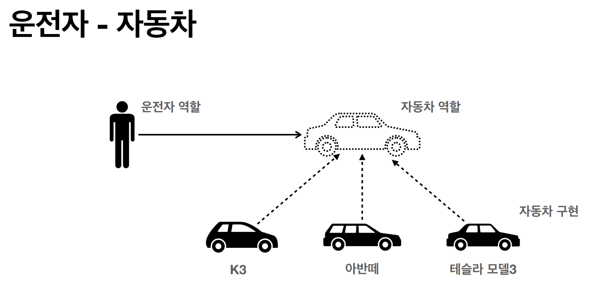

단일 책임 원칙(Single Responsibility Principle/SRP)
“클래스는 단 하나의 책임만 가져야 한다.”
- Spring에서는 Service, Repository, Controller를 분리하여 각각의 역할을 담당하게 한다.
-
예를 들어, 비즈니스 로직은
Service에, 데이터 접근은Repository에, 요청 처리는Controller에 둠으로써 SRP를 적용할 수 있다.
⭐ 개방-폐쇄 원칙(Open/Closed Principle/OCP)
“확장에는 열려 있고, 변경에는 닫혀 있어야 한다.”
- Spring의 DI(Dependency Injection)와 Bean 설정을 활용하면 코드 변경 없이 새로운 기능을 추가할 수 있다.
- 예를 들어, 인터페이스를 사용하면 기존 코드를 수정하지 않고 새로운 구현체를 추가 가능하다.
public interface PaymentService {
void pay();
}
@Component
public class CreditCardPaymentService implements PaymentService {
public void pay() {
System.out.println("신용카드로 결제");
}
}
@Component
public class PaypalPaymentService implements PaymentService {
public void pay() {
System.out.println("PayPal로 결제");
}
}
@Service
public class OrderService {
private final PaymentService paymentService;
@Autowired
public OrderService(@Qualifier("paypalPaymentService") PaymentService paymentService) {
this.paymentService = paymentService;
}
public void processOrder() {
paymentService.pay();
}
}-
PaymentService인터페이스를 사용하여OrderService의 코드를 수정하지 않고 결제 방식을 확장할 수 있다. @Qualifier("paypalPaymentService")로PaypalPaymentService를 명확히 지정한다.
리스코프 치환 원칙(Liskov Substitution Principle/LSP)
“하위 타입은 상위 타입을 대체할 수 있어야 한다.”
- 프로그램의 객체는 프로그램의 정확성을 깨뜨리지 않으면서 하위 타입의 인스턴스로 바꿀 수 있어야 한다.
- Spring의 DI와 다형성을 활용하면 상위 타입(인터페이스)을 통해 하위 구현을 무리 없이 교체할 수 있다.
- 예:
JdbcUserRepository,JpaUserRepository등을UserRepository로 교체
public interface NotificationService {
void sendNotification(String message);
}
@Component
public class EmailNotificationService implements NotificationService {
public void sendNotification(String message) {
System.out.println("이메일 전송: " + message);
}
}
@Component
public class SmsNotificationService implements NotificationService {
public void sendNotification(String message) {
System.out.println("SMS 전송: " + message);
}
}
@Service
public class AlertService {
private final NotificationService notificationService;
@Autowired
public AlertService(NotificationService notificationService) {
this.notificationService = notificationService;
}
public void alert(String message) {
notificationService.sendNotification(message);
}
}AlertService는NotificationService인터페이스를 사용하므로 이메일 ↔ SMS 변경이 쉽다.
인터페이스 분리 원칙(Interface Segregation Principle/ISP)
“클라이언트가 사용하지 않는 기능에 의존하지 않도록 인터페이스를 분리해야 한다.”
- 하나의 거대한 인터페이스보다 작고 역할이 명확한 인터페이스 여러 개가 유지보수에 유리하다.
- Spring의 Service/Repository 레이어에서 역할 기반 인터페이스 분리가 좋은 예시가 된다.
🙅 잘못된 예시 (ISP 위반)
public interface UserService {
void registerUser(User user);
void deleteUser(Long userId);
User findUserById(Long userId);
List<User> findAllUsers();
void changeUserPassword(Long userId, String newPassword);
}- 하나의 인터페이스에 모든 기능이 몰려, 구현체가 필요 없는 메서드까지 구현해야 하는 의존성이 생길 수 있다.
✅ 올바른 예시 (ISP 적용)
// 읽기 전용 인터페이스
public interface UserReadService {
User findUserById(Long userId);
List<User> findAllUsers();
}
// 쓰기 전용 인터페이스
public interface UserWriteService {
void registerUser(User user);
void deleteUser(Long userId);
void changeUserPassword(Long userId, String newPassword);
}@Service
public class UserServiceImpl implements UserReadService, UserWriteService {
@Override
public User findUserById(Long userId) {
return new User(); // 예제이므로 단순한 리턴 값
}
@Override
public List<User> findAllUsers() {
return new ArrayList<>();
}
@Override
public void registerUser(User user) {
System.out.println("회원 가입 완료");
}
@Override
public void deleteUser(Long userId) {
System.out.println("회원 삭제 완료");
}
@Override
public void changeUserPassword(Long userId, String newPassword) {
System.out.println("비밀번호 변경 완료");
}
}UserServiceImpl이 두 인터페이스를 구현하여 필요에 따라 역할을 확장할 수 있다.
⭐ 의존관계 역전 원칙(Dependency Inversion Principle/DIP)
“상위 모듈이 하위 모듈에 의존하는 것이 아니라, 추상화(인터페이스)에 의존해야 한다.”
- 프로그래머는 구체(구현체)가 아니라 추상화(역할)에 의존해야 한다.
- Spring의 의존성 주입(DI) 자체가 DIP를 따르는 대표적인 메커니즘이다.

public interface MessageSender {
void send(String message);
}
@Component
public class EmailSender implements MessageSender {
public void send(String message) {
System.out.println("이메일 발송: " + message);
}
}
@Service
public class NotificationService {
private final MessageSender messageSender;
@Autowired
public NotificationService(MessageSender messageSender) {
this.messageSender = messageSender;
}
public void notifyUser(String message) {
messageSender.send(message);
}
}NotificationService는MessageSender역할에만 의존하므로 구현체 교체가 쉽다.